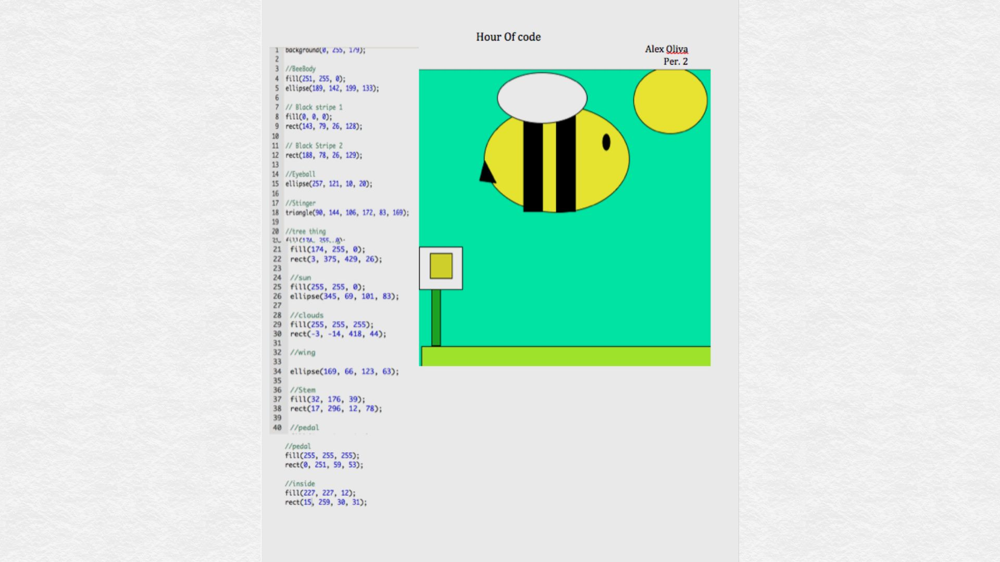

What Ive learned in the Past 3 years
| 6th Grade | 7th Grade | 8th Grade | ||
|---|---|---|---|---|
| Typing | Microsoft Word | Microsoft Excel | StoryBoad | |
| SketchUp | FloorPlanner | Code | Illustrator | Photoshop |
| Html | Css |
Hour of Code
In 6th grade, I was introduced to Code, and in the "Hour of Code", it gave me a great oppurtunity to chose a fun creature to create from scratch. I stuck with something simple but eye pleasing. Coding was a bit difficult, but the outcome of coding is definitely worth it!
7th Grade Photoshop

PhotoShop is by far my favorite unit in ATM because editing photos, of course more complex than the photo I first Photoshopped above. It has tons of creative tools availiable to make photos completely different and however you want to tweak it.
Filming
I really enjoyed this unit. It made me realize that is actually is kinda fun. I learned new ways to film, like shoulder shots, etc.
Alpaca Video
I added my own sounds to the Alpaca video. Before I was given this assignment ther was no audio inside the video.
Reflection of the Program
Since I started ATM, to the point I’m at now, I feel way more comfortable around computers, and don't need a lot of help with computers when I type essays, powerpoints, etc. I had never realized how fun coding and created websites were. Now I am more free to do these things on my own, and can do it when Im bored.